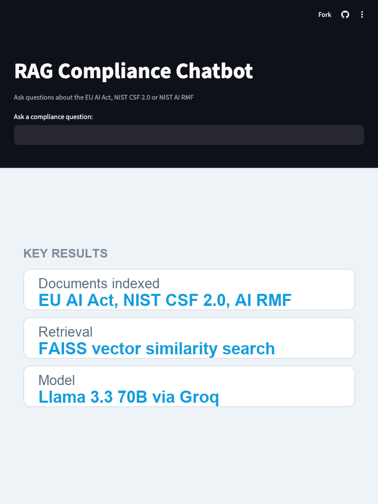
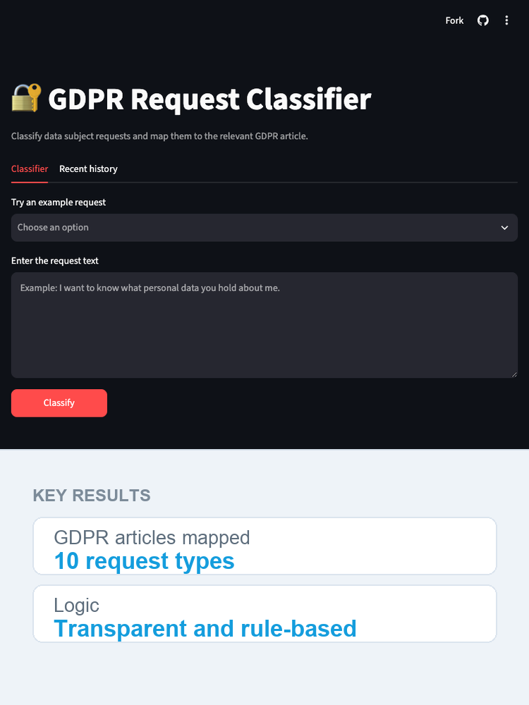
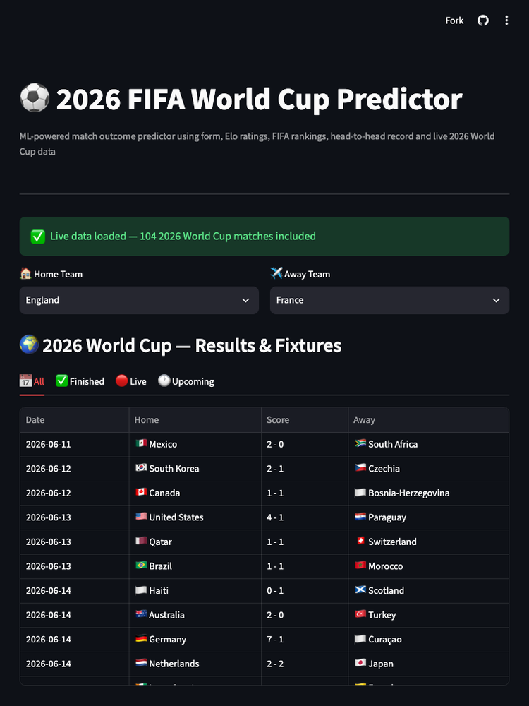
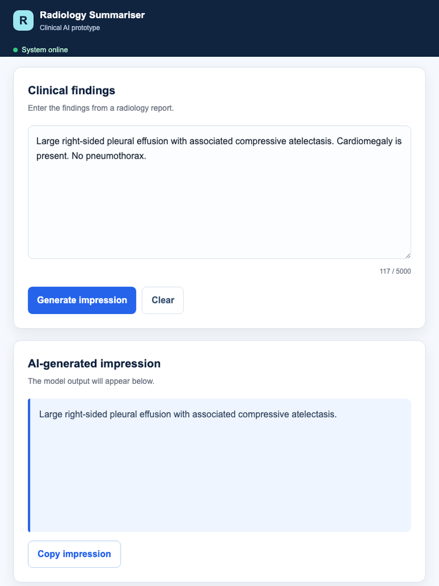
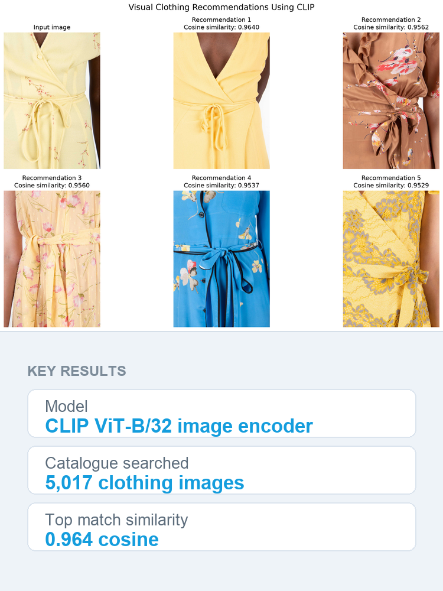
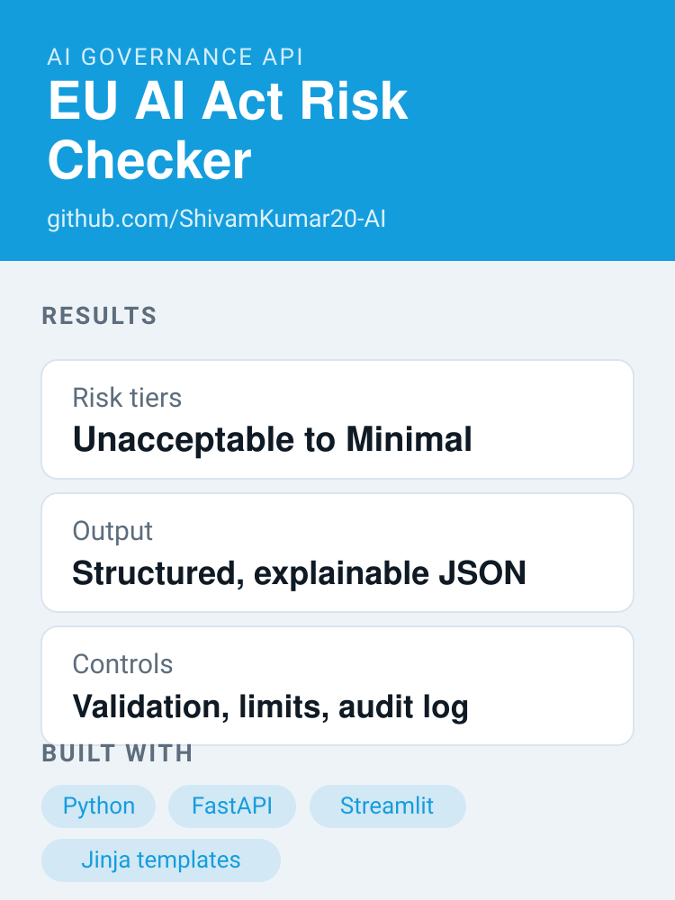
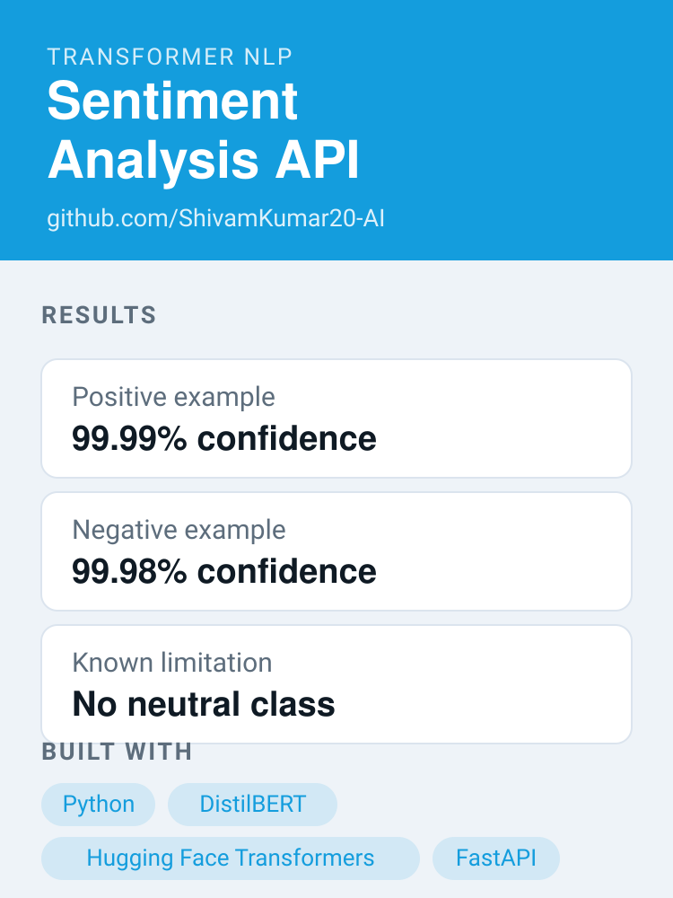
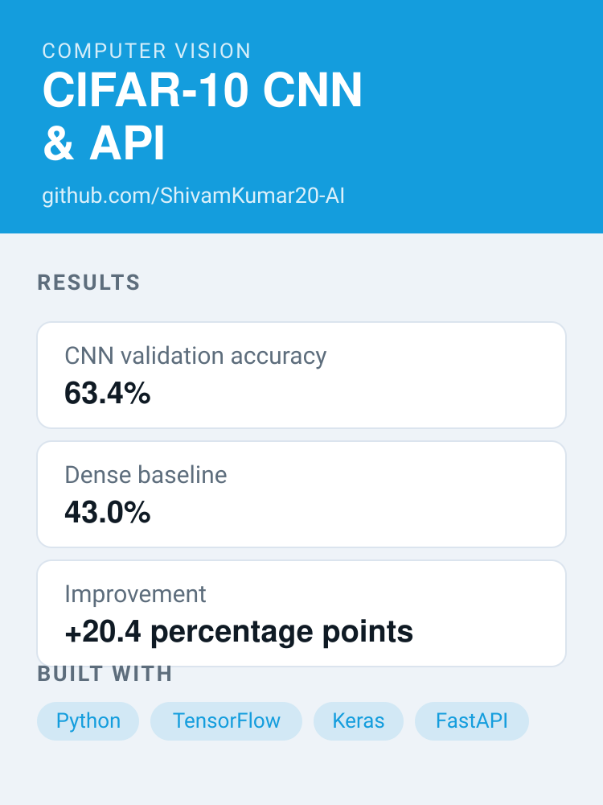
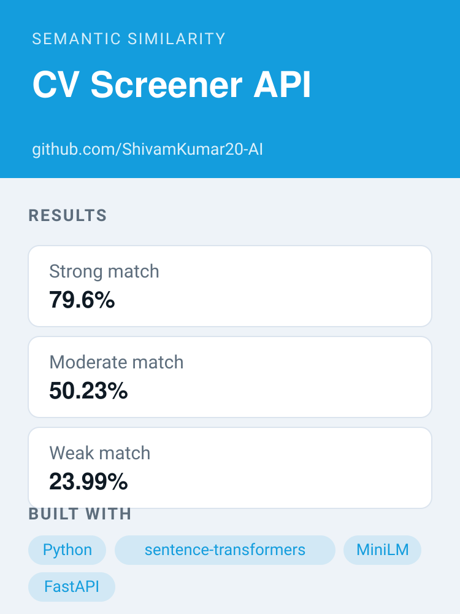

LiveRetrieval-augmented generation
RAG Compliance Chatbot
A retrieval-augmented chatbot that answers natural-language questions about AI regulation, with the source passages cited back to the reader.
I build and deploy machine learning models, NLP pipelines, REST APIs and LLM-powered applications, and I pair that engineering work with practical experience of ISO 27001, GDPR, the EU AI Act and AI governance.
Junior AI / ML Engineer — Birmingham, United Kingdom
My work spans retrieval-augmented generation, transformer fine-tuning, computer vision and classical machine learning — shipped as working applications rather than notebooks alone. Five of the projects below are live and publicly usable.
I hold the AWS Certified AI Practitioner and CompTIA Security+ (SY0-701) certifications, and I am currently open to junior AI/ML, applied NLP and responsible-AI engineering roles.
Public repositories on GitHub
Live applications deployed and publicly usable
Featured projects across NLP, vision and governance
Years in technology delivery, support and compliance
Four years across technology delivery, support and compliance, now focused on building and shipping AI and machine learning applications.
I build and deploy machine learning models, NLP pipelines, REST APIs and LLM-powered applications, and I pair that engineering work with practical experience of ISO 27001, GDPR, the EU AI Act and AI governance.
IT Career Switch — AI Engineer traineeship curriculum
Machine learning fundamentals, Python for AI, data handling and processing, deep learning, natural language processing, computer vision, Git/GitHub, AI deployment and MLOps.
Peak Cyber Institute, Remote (United Kingdom)
LRQA Nettitude, United Kingdom
P&O Ferrymasters, United Kingdom
The languages, frameworks, libraries and platforms I have studied and used to build and deploy the projects below.
 Python
Python
 JavaScript
JavaScript
 TypeScript
TypeScript
 SQL / SQLite
SQL / SQLite
 FastAPI
FastAPI
 LangChain
LangChain
 Hugging Face
Hugging Face
 scikit-learn
scikit-learn
 TensorFlow
TensorFlow
 Keras
Keras
 PyTorch
PyTorch
 pandas
pandas
 NumPy
NumPy
 Streamlit
Streamlit
 Jupyter
Jupyter
 Git
Git
 GitHub
GitHub
 Docker
Docker
 VS Code
VS Code
 AWS
AWS
 Microsoft Azure
Microsoft Azure
 Google Cloud
Google Cloud
Nine AI and machine learning projects, from retrieval-augmented generation to clinical NLP and computer vision. Five are deployed and publicly usable.

LiveRetrieval-augmented generation
A retrieval-augmented chatbot that answers natural-language questions about AI regulation, with the source passages cited back to the reader.

LiveCompliance automation
Triages incoming data-subject requests, maps each one to the relevant GDPR article and recommends the next compliance action.

LiveApplied machine learning
Predicts the outcome of any international football fixture using an XGBoost classifier trained on more than 25,000 historical matches.

LiveClinical NLP
Fine-tunes a T5 transformer to turn the free-text findings of a chest X-ray report into a short radiology impression, served through a REST API.

LiveComputer vision
Upload a photo of a garment and get back the five most visually similar items from a retail catalogue, ranked by CLIP image similarity.

AI governance API
A REST API and web interface that screens an AI use case against the EU AI Act risk tiers and returns a structured, explainable verdict.

Transformer NLP
A production-style REST service that classifies text as positive or negative using a fine-tuned DistilBERT model.

Computer vision
A convolutional neural network trained on CIFAR-10, benchmarked against a dense baseline and served through a REST API.

Semantic similarity
Scores how well a candidate CV matches a job description using semantic sentence embeddings rather than keyword counting.
Live applications are hosted on Streamlit Community Cloud and may take a few seconds to wake from sleep.
Longer-form writing on applying AI to governance, risk and compliance work.
AI governance
A GDPR request classifier, and where it deliberately stops
When someone exercises their GDPR rights the clock starts immediately, and the hard part is rarely the law — it is reading a steady stream of messy, real-world messages fast enough to meet a one-month deadline. This piece walks through the triage tool I built for that first step: how it maps everyday wording to the right the request most plausibly engages, why it stops at a suggestion rather than a decision, and the safeguards — mandatory human sign-off, data minimisation, an audit log and a DPIA before any real scale — that keep the data protection officer accountable rather than the algorithm.
Open to junior AI/ML, applied NLP and responsible-AI engineering roles. The quickest way to reach me is on LinkedIn.
Birmingham, United Kingdom